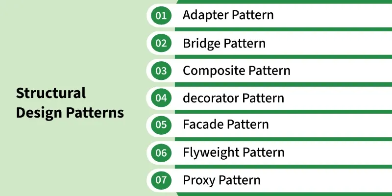
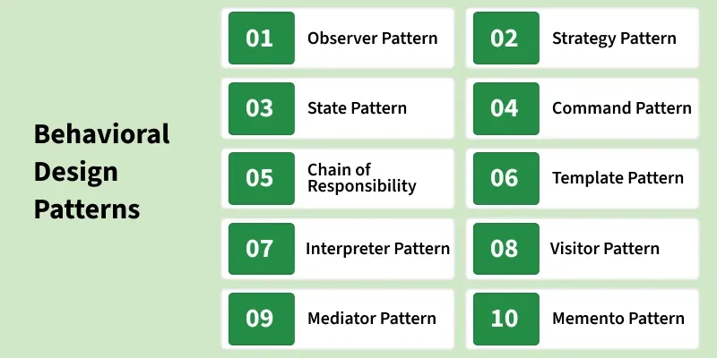

12.2 Design Patterns
Design patterns are reusable, proven solutions to common problems encountered during the design and implementation of software systems. They were popularised by the Gang of Four (GoF) — Gamma, Helm, Johnson, and Vlissides — in their 1994 book Design Patterns: Elements of Reusable Object-Oriented Software. Patterns represent design-level reuse — see §12.1 Reusability — and extend the OOD principles from §5.15 Object-Oriented Design.
What is pattern designing?
- Pattern designing is the application of design patterns — reusable and proven solutions — to common problems during software design and implementation.
- Design patterns are general solutions to recurring design problems that have been tried and tested in real-world scenarios.
- They provide a set of proven approaches that promote best practices in software development.
- Patterns are programming language-independent strategies — they represent ideas, not particular implementations.
- Using patterns makes code more flexible, reusable, and maintainable when applied to the right problem.
- Patterns are not mandatory for every project — they are meant for common problem-solving, applied when a suitable recurring problem is identified.
Pattern structure (GoF template)
Every design pattern is documented using a standard template with four key elements:
- Pattern name: A meaningful name that captures the essence of the pattern — e.g. Singleton, Observer, Factory Method — establishing a common vocabulary for developers.
- Problem: The recurring design problem or situation where the pattern applies — when to use it and what forces or constraints exist.
- Solution: The proven design structure — the classes, objects, and relationships that resolve the problem.
- Consequences: The results of applying the pattern — trade-offs in flexibility, complexity, performance, and maintainability.
Characteristics of pattern designing
- Problem-solution approach: Patterns identify common design problems and provide well-defined, proven solutions effective in similar contexts.
- Reusability: Patterns encapsulate successful design practices that can be applied across multiple projects, saving time and effort.
- Abstraction: Patterns abstract away specific implementation details and focus on high-level design concepts.
- Common vocabulary: Patterns establish standard terms that developers use to communicate design decisions — saying "Observer" conveys a full design intent.
- Proven solutions: Patterns are based on collective community experience, not arbitrary design choices — they represent solutions tested in real projects.
Three categories of design patterns (GoF)
The Gang of Four categorises 23 design patterns into three groups based on their purpose:
| Category | Purpose | Key idea | Example patterns |
|---|---|---|---|
| Creational | Object creation mechanisms | Abstract how objects are instantiated | Singleton, Factory Method, Abstract Factory, Builder, Prototype |
| Structural | Class and object composition | Combine objects into larger structures | Adapter, Bridge, Composite, Decorator, Facade, Flyweight, Proxy |
| Behavioral | Object communication and responsibility | Define how objects interact and distribute work | Observer, Strategy, Command, State, Template Method, Visitor |
1. Creational design patterns
- Creational patterns abstract the instantiation process — they make a system independent of how its objects are created, composed, and represented.
- They encapsulate knowledge about which concrete classes the system uses and hide how instances are created and assembled.
- Two recurring themes: encapsulating which concrete class is used; hiding how instances are created.
- Singleton: Ensures a class has only one instance and provides a global access point — used for database connections, configuration managers, and logging systems.
- Factory Method: Defines an interface for creating objects but lets subclasses decide which class to instantiate — decouples object creation from the code that uses objects.
- Abstract Factory: Provides an interface for creating families of related objects without specifying their concrete classes.
- Builder: Separates the construction of a complex object from its representation — same construction process can create different representations.
- Prototype: Creates new objects by copying an existing object (prototype) rather than creating from scratch — useful when object creation is expensive.
Singleton pattern — example
- The Singleton pattern ensures only one object of a class exists in the application.
- All clients receive the same shared instance — e.g. one DatabaseConnectionManager for the entire application.
- Prevents accidental creation of multiple instances and ensures efficient, consistent use of shared resources.
- Can use lazy initialization (created on first access) or eager initialization (created at class load time).
CLASS DatabaseConnectionManager
PRIVATE STATIC instance = NULL
PRIVATE connectionString
// Private constructor — prevents external instantiation
PRIVATE CONSTRUCTOR DatabaseConnectionManager(connStr)
connectionString = connStr
END CONSTRUCTOR
PUBLIC STATIC FUNCTION getInstance(connStr)
IF instance IS NULL THEN
instance = NEW DatabaseConnectionManager(connStr)
END IF
RETURN instance
END FUNCTION
PUBLIC FUNCTION executeQuery(sql)
// use shared connection
END FUNCTION
END CLASS
// All clients get the same instance
db1 = DatabaseConnectionManager.getInstance("localhost:5432")
db2 = DatabaseConnectionManager.getInstance("localhost:5432")
// db1 IS db2 → only ONE instance existsFactory Method pattern — example
- The Factory Method defines an interface for creating objects but lets subclasses decide which concrete class to instantiate.
- The client code works with the abstract product interface — it does not need to know the concrete class being created.
- New product types can be added by creating new subclasses without modifying existing client code — supports the Open/Closed Principle.
ABSTRACT CLASS DocumentCreator
ABSTRACT FUNCTION createDocument() // Factory Method
FUNCTION processDocument()
doc = createDocument()
doc.open()
doc.save()
END FUNCTION
END CLASS
CLASS PDFCreator EXTENDS DocumentCreator
FUNCTION createDocument()
RETURN NEW PDFDocument()
END FUNCTION
END CLASS
CLASS WordCreator EXTENDS DocumentCreator
FUNCTION createDocument()
RETURN NEW WordDocument()
END FUNCTION
END CLASS
// Client uses abstract creator — no knowledge of concrete type
creator = NEW PDFCreator()
creator.processDocument() // creates and processes a PDF2. Structural design patterns

- Structural patterns are concerned with how classes and objects are composed to form larger structures while keeping those structures flexible and efficient.
- They help independently developed class libraries work together and allow new functionality through object composition at runtime.
- Adapter: Converts the interface of a class into another interface clients expect — lets incompatible classes work together (wrapper pattern).
- Bridge: Separates an abstraction from its implementation so both can vary independently — avoids permanent binding between abstraction and implementation.
- Composite: Composes objects into tree structures to represent part-whole hierarchies — clients treat individual objects and compositions uniformly.
- Decorator: Adds new responsibilities to objects dynamically without altering their structure — wraps the original object with additional functionality.
- Facade: Provides a unified, simplified interface to a set of interfaces in a subsystem — makes the subsystem easier to use.
- Flyweight: Shares common data across multiple objects to reduce memory usage — separates intrinsic (shared) state from extrinsic (unique) state.
- Proxy: Provides a surrogate or placeholder to control access to another object — supports lazy loading, access control, and logging.
3. Behavioral design patterns

- Behavioral patterns are concerned with algorithms and the assignment of responsibilities between objects — how objects communicate and distribute work.
- They characterise complex control flows and define patterns of communication, not just object structure.
- Behavioral class patterns use inheritance to distribute behaviour; behavioral object patterns use object composition.
- Observer: Defines a one-to-many dependency — when one object changes state, all dependents are notified automatically (publish-subscribe).
- Strategy: Defines a family of algorithms, encapsulates each one, and makes them interchangeable — lets the algorithm vary independently from clients.
- State: Allows an object to alter its behaviour when its internal state changes — replaces complex conditional logic with state objects.
- Command: Encapsulates a request as an object — supports undo/redo, queuing, and logging of requests.
- Chain of Responsibility: Passes a request along a chain of handlers — each handler decides whether to process it or pass it on.
- Template Method: Defines the skeleton of an algorithm in a base class — subclasses override specific steps without changing the overall structure.
- Mediator: Defines an object that encapsulates how a set of objects interact — promotes loose coupling by preventing direct object references.
- Memento: Captures and restores an object's internal state without breaking encapsulation — supports undo and rollback.
- Visitor: Adds new operations to a class hierarchy without modifying the classes — separates algorithms from object structure.
- Interpreter: Defines a representation for a language grammar and an interpreter — used for domain-specific languages.
Observer pattern — example
- The Observer pattern defines a one-to-many dependency between a subject and its observers.
- When the subject's state changes, all registered observers are notified and updated automatically.
- Commonly used in GUI event handling, publish-subscribe systems, and model-view architectures.
- Observers and subjects are loosely coupled — new observer types can be added without modifying the subject.
INTERFACE Observer
FUNCTION update(data)
END INTERFACE
CLASS StockMarket // Subject
PRIVATE observers = []
PRIVATE price
FUNCTION attach(observer)
observers.add(observer)
END FUNCTION
FUNCTION setPrice(newPrice)
price = newPrice
FOR EACH obs IN observers DO
obs.update(price) // notify all observers
END FOR
END FUNCTION
END CLASS
CLASS StockDisplay IMPLEMENTS Observer // Concrete Observer
FUNCTION update(data)
PRINT "Stock price updated: " + data
END FUNCTION
END CLASS
market = NEW StockMarket()
display = NEW StockDisplay()
market.attach(display)
market.setPrice(150.00) // display automatically notifiedStrategy pattern — example
- The Strategy pattern defines a family of interchangeable algorithms encapsulated in separate strategy classes.
- The client selects or switches the strategy at runtime without modifying client code — eliminates complex if-else chains for algorithm selection.
- Commonly used for sorting algorithms, payment methods, compression formats, and routing policies.
INTERFACE PaymentStrategy
FUNCTION pay(amount)
END INTERFACE
CLASS CreditCardPayment IMPLEMENTS PaymentStrategy
FUNCTION pay(amount)
PRINT "Paid " + amount + " via Credit Card"
END FUNCTION
END CLASS
CLASS PayPalPayment IMPLEMENTS PaymentStrategy
FUNCTION pay(amount)
PRINT "Paid " + amount + " via PayPal"
END FUNCTION
END CLASS
CLASS ShoppingCart
PRIVATE strategy // current payment strategy
FUNCTION setPaymentStrategy(s)
strategy = s
END FUNCTION
FUNCTION checkout(amount)
strategy.pay(amount) // delegates to selected strategy
END FUNCTION
END CLASS
cart = NEW ShoppingCart()
cart.setPaymentStrategy(NEW CreditCardPayment())
cart.checkout(99.99)
cart.setPaymentStrategy(NEW PayPalPayment()) // switch at runtime
cart.checkout(49.50)Patterns vs reusability
- Code reuse operates at the implementation level — reusing actual source code modules or libraries.
- Pattern reuse operates at the design level — reusing proven design structures and relationships between classes.
- Patterns do not provide ready-made code — they provide a blueprint that must be adapted to the specific context of each project.
- Both forms of reuse reduce development effort, improve quality, and promote consistency — they complement each other in a reuse strategy.
- Overusing patterns without a clear need can introduce unnecessary complexity — patterns should be applied when a genuine recurring problem exists.
Design patterns and OOD / UML
- Design patterns extend OOD principles — they apply high cohesion, low coupling, and information hiding in proven combinations — see §5.10 Coupling and Cohesion.
- Patterns are commonly documented using UML class diagrams showing the participating classes, their relationships, and roles — see §5.16 UML Modelling.
- Creational patterns often appear as factory classes in class diagrams; behavioral patterns like Observer show association relationships between subject and observer classes.
- Understanding OOD concepts (inheritance, polymorphism, encapsulation, interfaces) is essential before applying patterns effectively.
Q: What are design patterns? Describe the GoF pattern template and three categories with one example each. Explain Singleton, Observer, and Strategy patterns.
Model answer points:
- Design pattern = reusable proven solution to recurring design problem; GoF 1994; language-independent; design-level reuse.
- Pattern template: name, problem, solution, consequences.
- Characteristics: problem-solution approach, reusability, abstraction, common vocabulary, proven solutions.
- Creational (object creation): Singleton, Factory, Abstract Factory, Builder, Prototype.
- Structural (composition): Adapter, Bridge, Composite, Decorator, Facade, Flyweight, Proxy.
- Behavioral (communication): Observer, Strategy, Command, State, Template Method, etc.
- Singleton: one instance, global access; used for DB manager, config, logging.
- Observer: one-to-many notification; subject notifies observers on state change; publish-subscribe.
- Strategy: interchangeable algorithms encapsulated in strategy classes; selected at runtime.
- Patterns vs code reuse: design-level vs implementation-level; complement each other.
- Link to OOD principles and UML class diagrams.